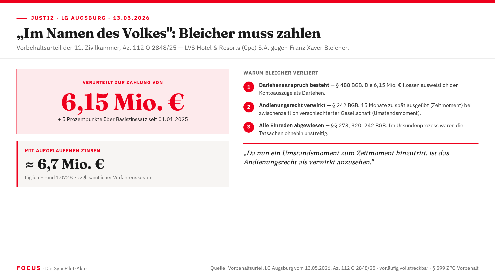
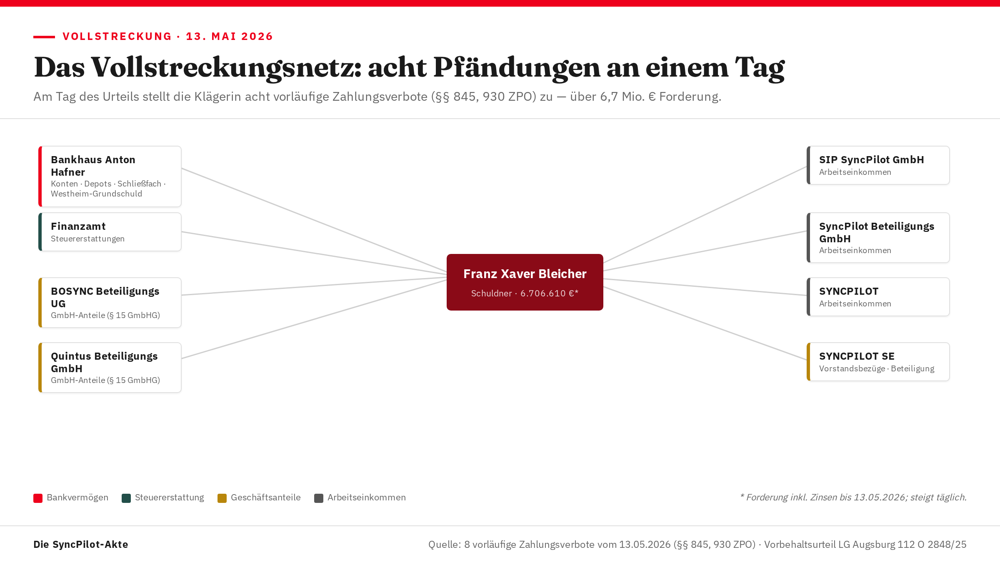

„Im Namen des Volkes“:
Bleicher muss zahlen
Das Landgericht Augsburg verurteilt Franz Xaver Bleicher zur Rückzahlung von 6,15 Mio. € — zuzüglich Verzugszinsen rund 6,7 Mio. €. Sein letztes Verteidigungsmittel, das Andienungsrecht, ist verwirkt. Ein Vorbehaltsurteil mit Sprengkraft.

Parteien und Spruchkörper
| Rolle | Person / Institution |
|---|---|
| Klägerin | LVS Hotel & Resorts (€pe) S.A., Luxemburg Klägerin · Kanzlei für Wirtschaftsrecht, Augsburg |
| Beklagter | Franz Xaver Bleicher, Augsburg Beklagter · die Verteidigung, München |
| Gericht | LG Augsburg, 11. Zivilkammer |
| Spruchkörper | 11. Zivilkammer des Landgerichts Augsburg |
| Streitgegenstand | Darlehensrückzahlung (Kooperationsvereinbarung 21.05.2021) |
| Rechtsmittel | Berufung · OLG München, Zivilsenate Augsburg · Frist: 1 Monat ab Zustellung |
Der Tenor — vier Punkte, eine Botschaft
| Nr. | Ausspruch | Norm |
|---|---|---|
| 1 | Der Beklagte wird verurteilt, an die Klägerin 6.150.000,00 € nebst Zinsen von 5 Prozentpunkten über dem Basiszinssatz seit dem 01.01.2025 zu zahlen. | § 488 BGB |
| 2 | Der Beklagte trägt die Kosten des Rechtsstreits. | § 91 ZPO |
| 3 | Das Urteil ist vorläufig vollstreckbar. Abwendung durch Sicherheitsleistung in Höhe von 110 %. | §§ 708 Nr. 4, 711 ZPO |
| 4 | Dem Beklagten bleibt die Ausführung seiner Rechte im Nachverfahren vorbehalten. | § 599 ZPO |
Der Basiszinssatz der EZB lag zum 01.01.2025 bei 2,27 %, fiel zum 01.07.2025 auf 1,27 % (seitdem unverändert). Daraus ergibt sich ein Verzugszinssatz von zunächst 7,27 %, ab Mitte 2025 von 6,27 % p.a.
Der Sachverhalt: Ein Deal in zwei Stufen
Die Ausgangslage 2021
Die luxemburgische LVS Hotel & Resorts (€pe) S.A. wollte in SYNCPILOT investieren — das Augsburger Unternehmen für digitale Vertragslösungen versprach rasantes Wachstum. Ein direkter Anteilserwerb scheiterte an der Aktionärsvereinbarung vom 07.12.2020: Bis Ende 2022 durfte kein Aktienpaket direkt oder indirekt wechseln.
Der Ausweg: ein zweistufiger mittelbarer Erwerb. LVS kaufte über ein Darlehen wirtschaftlich 10.923 Geschäftsanteile (43,69 %) an der Quintus Beteiligungs GmbH — was einer indirekten Beteiligung von 15 % an der SYNCPILOT SE entsprochen hätte. Vereinbarter Preis: 18,75 Mio. €.
Die Kooperations- und Call-Optionsvereinbarung vom 21. Mai 2021
FXB räumte LVS zwei Call-Optionen auf Quintus-Anteile ein:
| Option | Anteile (lfd. Nr.) | Kaufpreis | Prämie | Gesamt |
|---|---|---|---|---|
| Option 1 | 11.251 – 16.712 | 7,45 Mio. € | 50.000 € | 7,5 Mio. € |
| Option 2 | 16.713 – 22.173 | 11,15 Mio. € | 100.000 € | 11,25 Mio. € |
Im Gegenzug gewährte LVS ein unverzinstes Darlehen über 18,75 Mio. €, Laufzeit bis 31.12.2024, zahlbar in sechs Teilbeträgen. Beide Call-Optionen wurden nie ausgeübt.
Was tatsächlich floss
Von den 18,75 Mio. € überwies LVS nur vier Tranchen:
| Datum | Betrag |
|---|---|
| 07.04.2021 | 0,65 Mio. € |
| 29.04.2021 | 1,5 Mio. € |
| 07.06.2021 | 1,0 Mio. € |
| 31.08.2021 | 3,0 Mio. € |
| Summe | 6,15 Mio. € |
Das Andienungsrecht (Ziff. 2.5 der Vereinbarung)
„Wenn zum Laufzeitende des Darlehens (31.12.2024) bzw. beim Exit die Call Optionen vom Investor nicht ausgeübt … worden sind, ist FXB berechtigt, dem Investor die Quintus-Anteile für einen Preis von € 18,80 Mio. (‚Andienungspreis') anzudienen und Investor für diesen Fall verpflichtet, die Quintus-Anteile zu erwerben."
FXB wartete — und wartete. Erst mit Schreiben vom 07.04.2026 zog er das Andienungsrecht: rund 15 Monate nach Fälligkeit.
Zwei stille Verschiebungen im Hintergrund
Satzungsänderung Quintus (12.01.2026): Neu in die Satzung aufgenommen wurden eine Einziehungs-Generalklausel (§ 10 Abs. 3 a) und eine Abfindungsklausel (§ 11 Abs. 3), die den Auszahlungsbetrag auf 60 % des Verkehrswerts — hilfsweise den niedrigsten angemessenen Betrag — beschränkt. Beide Klauseln fehlten bei Vertragsschluss 2021.
Beteiligungsverschiebung SYNCPILOT: Früher hielten BOSYNC Beteiligungs UG und Quintus zusammen 41 %. Zur außerordentlichen Hauptversammlung am 05.08.2025 hielt BOSYNC nur noch 24,1 % — Quintus gar keine SYNCPILOT-Aktien mehr. Statt der versprochenen 15 % wäre für LVS allenfalls eine mittelbare Beteiligung von 8,8 % erreichbar gewesen.
Warum Franz Xaver Bleicher verliert
A. Klage zulässig
Das LG Augsburg ist sachlich (§§ 23 Nr. 1, 71 Abs. 1 GVG) und örtlich (§§ 12, 13 ZPO) zuständig — als Zivilkammer, nicht als Kammer für Handelssachen. Die Urkundsklage nach § 592 ZPO ist statthaft: Die anspruchsbegründenden Tatsachen waren ohnehin unstreitig (§§ 288, 138 Abs. 3 ZPO) — ein Urkundenbeweis war damit nicht einmal erforderlich. FXBs Einwand, die Komplexität der Vertragsstruktur schließe den Urkundenprozess aus, verfängt nicht: Das Gesetz kennt keine Komplexitätsgrenze.
B. Klage begründet — Darlehensanspruch besteht (§ 488 Abs. 1 S. 2 BGB)
Das Darlehen ist wirksam. FXBs Konstruktion, es handele sich lediglich um ein „technisches Finanzierungsvehikel", überzeugt das Gericht nicht: Auch eine aus steuerlichen Gründen gewählte Darlehensform ist rechtlich gewollt (BGH II ZR 264/07). Die Überweisung der 6,15 Mio. € ist ausweislich der Kontoauszüge dem Darlehen — nicht Optionsprämien — zuzuordnen. Fälligkeit: zum Laufzeitende 31.12.2024.
C. Andienungsrecht verwirkt — § 242 BGB
Dies ist der Kern des Urteils. Das Gericht prüft das Andienungsrecht in zwei Schritten:
Andienungsrechte werden am Markt üblicherweise binnen weniger Wochen ausgeübt — FXB ließ 15 Monate verstreichen. Erstmals überhaupt erwähnt hatte er das Recht im Schreiben vom 06.10.2025 (Anlage B12). Das reicht dem Gericht für das Zeitmoment der Verwirkung.
Durch die nachträglichen Beteiligungsverschiebungen (HV 05.08.2025) und die zu Lasten der LVS geänderte Quintus-Satzung (12.01.2026) durfte LVS darauf vertrauen, FXB werde das Recht nicht mehr geltend machen. Die späte Andienung würde LVS zwingen, Anteile an einer nachträglich verschlechterten Gesellschaft zu übernehmen — eine unzumutbare Härte.
Beide Momente zusammen: Verwirkung nach § 242 BGB.
Sämtliche weiteren Einreden scheitern
| Einrede | Norm | Ergebnis |
|---|---|---|
| Unvollständige Darlehensauszahlung begründe Zurückbehaltungsrecht | § 320 BGB | Abgewiesen — keine Synallagma |
| Anspruch auf Anteilskaufvertrag als Gegenanspruch | § 273 BGB | Abgewiesen — Andienungsrecht nie wirksam ausgeübt |
| Einrede des nicht erfüllten Vertrags | § 320 BGB | Abgewiesen |
| Dolo-agit-Einwand (Andienungspreis-Gegenanspruch) | § 242 BGB | Abgewiesen — kein Anspruch mangels wirksamer Ausübung |
Zinsen
Verzugszinsen nach §§ 288 Abs. 1, 286 Abs. 1, 2 Abs. 1 BGB: 5 Prozentpunkte über dem Basiszinssatz seit 01.01.2025.
D./E. Nebenentscheidungen
| Punkt | Entscheidung | Norm |
|---|---|---|
| Kosten | Beklagter trägt die Kosten vollständig | § 91 Abs. 1 ZPO |
| Vollstreckbarkeit | Vorläufig vollstreckbar; Abwendung bei 110 % Sicherheitsleistung | §§ 708 Nr. 4, 711 ZPO |
| Vollstreckungsschutzanträge §§ 769/712 ZPO | Unzulässig — nicht rechtzeitig in der mündlichen Verhandlung gestellt; keine Wiedereröffnung nach § 156 ZPO | §§ 769, 712, 156 ZPO |
| § 599 ZPO Vorbehalt | Dem Beklagten bleibt die Rechtsausführung im Nachverfahren vorbehalten | § 599 ZPO |
Berufung ist möglich beim OLG München, Zivilsenate in Augsburg (Fuggerstraße 10, 86150 Augsburg). Frist: ein Monat ab Zustellung des Urteils; Begründungsfrist: zwei Monate. Einlegung nur durch einen zugelassenen Rechtsanwalt; grundsätzlich als elektronisches Dokument. Unterzeichnet und beglaubigt durch die 11. Zivilkammer des LG Augsburg.
Acht Pfändungen an einem Tag
Am Tag der Urteilsverkündung stellte die Klägerin acht vorläufige Zahlungsverbote zu — ein Zugriffsnetz über die gesamte Vermögenssphäre des Beklagten.

Es handelt sich um Vorpfändungen nach §§ 845, 930 ZPO — die Ankündigung der bevorstehenden Pfändung, die der Klägerin den Rang sichert. Sie belegen Zugriff und Reichweite; ob Konten tatsächlich gefüllt oder leer waren, ist damit nicht gesagt.
| Drittschuldner | Erfasster Vermögenswert | Art |
|---|---|---|
| Bankhaus Anton Hafner KG | Guthaben, Wertpapierdepots, Schließfachinhalt, Rückgewähr der Westheim-Grundschuld | Bankvermögen |
| Finanzamt | Steuererstattungen | Steuer |
| BOSYNC Beteiligungs UG | Geschäftsanteile des Schuldners (§ 15 GmbHG) | Anteile |
| Quintus Beteiligungs GmbH | Geschäftsanteile des Schuldners (§ 15 GmbHG) | Anteile |
| SIP SyncPilot GmbH | Arbeitseinkommen | Einkommen |
| SyncPilot Beteiligungs GmbH | Arbeitseinkommen | Einkommen |
| SYNCPILOT | Arbeitseinkommen | Einkommen |
| SYNCPILOT SE | Vorstandsbezüge / Beteiligung | Einkommen/Anteile |
Mehrere SyncPilot-Gesellschaften mit ähnlichem Namen werden parallel adressiert; die genaue gesellschaftsrechtliche Abgrenzung ist offen. Hypothese
Im Grundbuch Augsburg von Westheim (Band 57, Blatt 1664) ist eine brieflose Grundschuld über 1.750.000 € nebst 15 % Zinsen jährlich auf einem Grundstück des Schuldners eingetragen — zugunsten des Bankhauses Anton Hafner, also dessen eigene Sicherheit. Damit tritt nach Kobelstraße und James-Cook-Straße ein dritter Immobilien-Bezug hinzu. Fakt Ob der auffällig hohe Zinssatz Eigenkapital dem Gläubigerzugriff entzieht, ist offen. Hypothese
Der Beklagte bot sein Andienungsrecht erst am 07.04.2026 an und hält die Darlehensschuld für unmittelbar „verrechnet". Das Gericht folgte dem nicht: Das Andienungs-/Put-Recht ist nur ein Vorvertrag — seine Ausübung verpflichtet allenfalls zum Abschluss eines künftigen Kaufvertrags, macht aber keinen Andienungspreis fällig. Es gibt also nichts zu verrechnen; zudem fehlt die notarielle Form (§ 15 GmbHG), und 15 Monate Verzögerung begründen Verwirkung (§ 242 BGB).